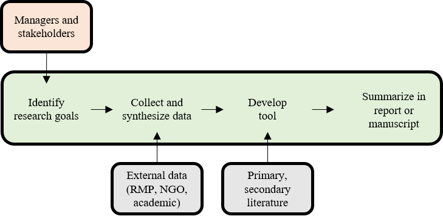

1 Basics of open science
1.1 Lesson Outline
1.2 Goals and motivation
This is the first module in our four hour workshop on open science. This module is designed to describe the need for open science, how it can improve research applications, and expose you to common ideas and terminology that we’ll be using throughout the day. Consider this your 30,000 foot view of open science. Our later modules will provide more detail on specific topics in open science that you can use for continued learning.
- Goal: get comfortable with key ideas and concepts for understanding open science
- Motivation: This is the first step in your open science journey!
1.3 Why open science?
Let’s start with revisiting the scientific process. I’m sure this looks familiar to all of you. This is geared towards an applied research question.
Our basic scientific approach to discovery is motivated by a question or research goal, developing a hypothesis for the question, collecting data based on the hypothesis, developing a tool that can be used for decision-making, and summarizing the results in a conventional format.
In a little more detail, your workflow may look something like this.

Many scientists, especially early career researchers (my past self included), may assume that this is sufficient to affect change. We write the report, send it out into the world, and move on to the next project. This is a common mentality:
“This 500-page report will answer all of their questions!”
From the other side, such as the manager or policy-maker, the report may be received like this:
“This 500-page report answers none of my questions!”
It’s dense, inaccessible, and there are probably questions about the underlying data and methods used to achieve the results. More importantly, it doesn’t present the information in an easily digestible format to quickly make the right decision. Sometimes, if you think you’re doing applied science, it may just be implied science that falls short of application.
Why is this conventional approach to science ineffective at seeding change?
As I’m sure we’re aware, the environmental management community is often siloed with each branch doing their own thing and speaking their own languages. Between the research (typically academic) and management community, we call this the research-management divide.

A distinct barrier exists between how scientific products are developed and how they fail to meet management needs. This is often the result of communication barriers, irreproducible results, information loss with poor documentation, inaccessible data, and opaque workflows known only to the analyst.
These barriers can occur at any stage of the research process. This compelling graphic from Michener et al. (1997) describes the atrophy of information in a closed approach to creating science.

The last part is especially morbid. Sometimes, this is called the “bus factor”. What would happen to your important work and life achievements if you were hit by a bus? Would others be able to pick it up? Research products with a high bus factor are at risk of being lost if critical team members are no longer available. This is obviously a risk and real problem.
So how do we make changes to our workflows to ensure we can achieve truly applied science using open tools and philosophies?
1.4 Learning and speaking the language of open science
The tools and broader philosophy behind open science can help us bridge the research management divide. It involves a fundamental shift in how we approach the scientific process, both for your own internal workflows and how you can engage others in the process. By others, we mean not just researchers but specifically those that need the information to make informed decisions.
Before we present a formal definition, let’s describe a modification of the conventional workflow that includes an open process to discovery and implementation (Beck et al. 2020; modified from Hampton et al. 2015).

This workflow is similar to the original scientific method, but the technical components are open to managers and stakeholders, we’re treating data differently by using metadata and archiving, we’re creating summary documents that include source code with original, and we’re producing decision-support tools to meet the needs outside of the research community. More importantly, the process is iterative and not static.
Throughout this workshop, we’ll learn about some open science tools that can be used in this generalized workflow to achieve better science in less time (Lowndes et al. 2017).
Now let’s settle on a definition for open science (from Open Knowledge International, http://opendefinition.org/, https://creativecommons.org/):
“The practice of science in such a way that others can collaborate and contribute, where research data, lab notes and other research processes are freely available, under terms that enable reuse, redistribution and reproduction of the research and its underlying data and methods.”
Key words from this definition are highlighted in bold. There are very specific tools in the open science toolbox that speak to each of these key words. We’ll cover some of these later.
From these key words, we can breakdown this definition into key principles.
Open data
- Public availability of data
- Reusability and transparent workflows
- Data provenance and metadata
Open process
- Iterative methods using reproducible workflows
- Collaboration with colleagues using web-based tools
- Leveraging external, open-source applications
Open products
- Interactive web products for communication
- Dynamic documents with source code
- Integration with external networks for discoverability
You’ll notice that web-based tools and open science are often discussed at the same time. Science existed before the internet and open science often focuses on how the two can leverage and support one another despite the latter being a relatively new addition to society. People often describe web-based tools as synonymous with open science.
1.5 The FAIR principles
Advocates of open science also describe the use of the FAIR principles (Wilkinson et al. 2016) as a vehicle for achieving the former. It’s important to understand what they mean so that you can be fluent in both. The FAIR acronym is described as follows:
- Findable: The data have a globally unique and persistent identifier, including use of “rich” metadata.
- Accessible: Once found, the data can be retrieved using standardized communications protocols that are open, free, and universally implementable.
- Interoperable: The ability of data or tools from non-cooperating resources to integrate or work together with minimal effort.
- Reusable: If the above are achieved, the data and metadata are described in a way that they can be replicated and/or combined in different settings.
Simply, what this means is: 1) each dataset has a name that doesn’t change and can be found with minimal effort using that name, 2) once it’s found, you can actually get your hands on it (e.g., not behind a paywall), 3) once you have it, you can use readily available tools to work with the data (e.g., not using proprietary software), and 4) you can actually apply the data for your own needs because it has sufficient context, including its reproduction, given the the first three principles are met.
For our purposes, think of these ideas as general guidelines you can ask yourself when doing science. If you find that your work does not achieve FAIR status, then you’re probably not being as open as you could be. We’ll of course provide some tools to help you be FAIR and open.
1.6 Schools of thought (#schools)
Finally, it’s useful to make a distinction of how different people may talk about open science. This can help you better navigate conversations and become an advocate for open science in your own right.
A useful paradigm is provided by Fecher and Friesike (2014) to describe open science as five distinct schools of thought:
These are of course only conceptual boxes and there’s considerable overlap across all schools when open science is used in practice. For our purposes, we’ll be talking about ideas and tools from the pragmatic, infrastructure, and democratic schools of the thought. The end goal is to provide you with the means to create more efficient and impactful science that can more readily be used by others in a collaborative setting.
References
Beck, M. W., C. O’Hara nad J. S. S. Lowndes, R. D. Mazor, S. Theroux, D. J. Gillett, B. Lane, and G. Gearheart. 2020. “The Importance of Open Science for Biological Assessment of Aquatic Environments.” PeerJ 8: e9539. https://doi.org/https://doi.org/10.7717/peerj.9539.
Fecher, B., and S. Friesike. 2014. “Open Science: One Term, Five Schools of Thought.” In Opening Science, 17–47. Springer, Cham.
Hampton, S. E., S. S. Anderson, S. C. Bagby, C. Gries, X. Han, E. M. Hart, M. B. Jones, et al. 2015. “The Tao of Open Science for Ecology.” Ecosphere 6 (7): 1–13. https://doi.org/10.1890/ES14-00402.1.
Lowndes, J. S. S., B. D. Best, C. Scarborough, J. C. Afflerbach, M. R. Frazier, C. C. O’Hara, N. Jiang, and B. S. Halpern. 2017. “Our Path to Better Science in Less Time Using Open Data Science Tools.” Nature Ecology & Evolution 1 (0160): 1–7. https://doi.org/10.1038/s41559-017-0160.
Michener, W. K., J. W. Brunt, J. J. Helly, T. B. Kirchner, and S. G. Stafford. 1997. “Nongeospatial Metadata for the Ecological Sciences.” Ecological Applications 7 (1): 330–42. https://doi.org/https://doi.org/10.1890/1051-0761(1997)007[0330:NMFTES]2.0.CO;2.
Wilkinson, M. D., M. Dumontier, I. J. Aalbersberg, G. Appleton, M. Axton, A. Baak, N. Blomberg, et al. 2016. “The Fair Guiding Principles for Scientific Data Management and Stewardship.” Scientific Data 3 (160018). https://doi.org/10.1038/sdata.2016.18.